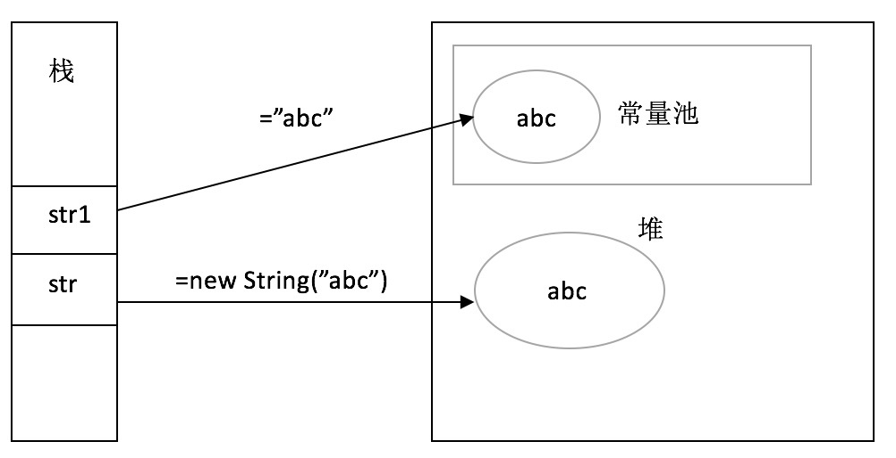
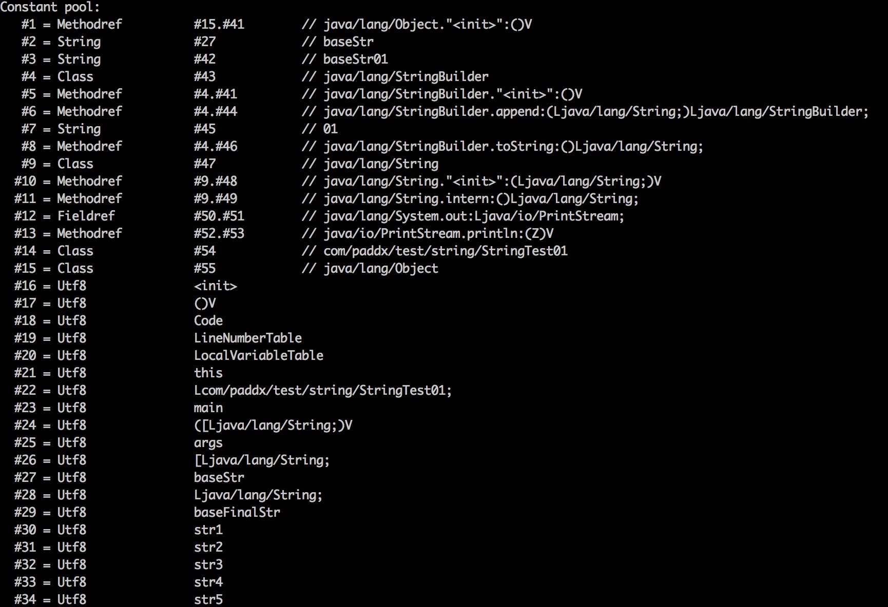
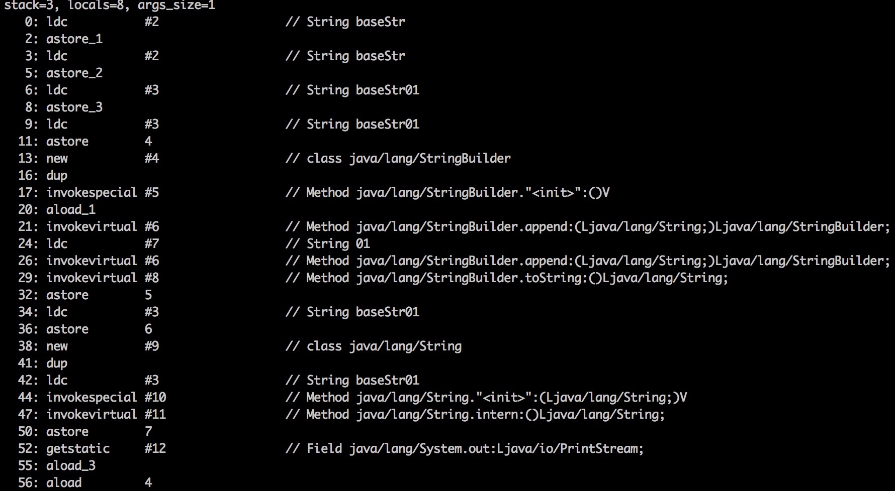
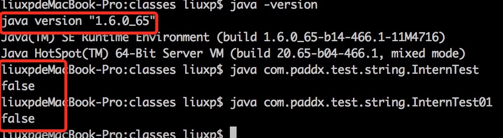
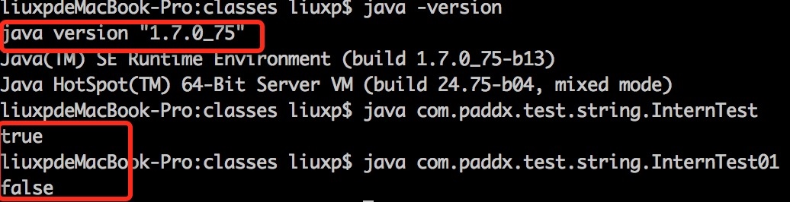

String与intern
介绍 字面量赋值创建字符串 与 通过new方式创建字符串
反编译类，看字符串常量池数据与代码执行的指令
intern的作用及变化
字符串问题
字符串在我们平时的编码工作中其实用的非常多，并且用起来也比较简单，所以很少有人对其做特别深入的研究。倒是面试或者笔试的时候，往往会涉及比较深入和难度大一点的问题。我在招聘的时候也偶尔会问应聘者相关的问题，倒不是说一定要回答的特别正确和深入，通常问这些问题的目的有两个，第一是考察对 JAVA 基础知识的了解程度，第二是考察应聘者对技术的态度。
我们看看以下程序会输出什么结果？如果你能正确的回答每一道题，并且清楚其原因，那本文对你就没什么太大的意义。如果回答不正确或者不是很清楚其原理，那就仔细看看以下的分析，本文应该能帮助你清楚的理解每段程序的结果及输出该结果的深层次原因。
1. 代码段一
package com.paddx.test.string;
public class StringTest {
public static void main(String[] args) {
String str1 = "string";
String str2 = new String("string");
String str3 = str2.intern();
System.out.println(str1==str2);//#1 ## false
System.out.println(str1==str3);//#2 ## true
}
}
代码段一分析
字符串不属于基本类型，但是可以像基本类型一样，直接通过字面量赋值，当然也可以通过new来生成一个字符串对象。不过通过字面量赋值的方式和new的方式生成字符串有本质的区别：

通过字面量赋值创建字符串时，会优先在常量池中查找是否已经存在相同的字符串，倘若已经存在，栈中的引用直接指向该字符串；倘若不存在，则在常量池中生成一个字符串，再将栈中的引用指向该字符串。
而通过new的方式创建字符串时，就直接在堆中生成一个字符串的对象（备注，JDK 7 以后，HotSpot 已将常量池从永久代转移到了堆中。详细信息可参考《Java8内存模型—永久代(PermGen)和元空间(Metaspace)》一文），栈中的引用指向该对象。对于堆中的字符串对象，可以通过 intern() 方法来将字符串添加的常量池中，并返回指向该常量的引用。现在我们应该能很清楚代码段一的结果了：
结果 #1： false 因为str1指向的是字符串中的常量，str2是在堆中生成的对象，所以str1==str2返回false。
结果 #2： true str2调用intern方法，会将str2中值（“string”）复制到常量池中，但是常量池中已经存在该字符串（即str1指向的字符串），所以直接返回该字符串的引用，因此str1==str2返回true。
2. 代码段二
package com.paddx.test.string;
public class StringTest01 {
public static void main(String[] args) {
String baseStr = "baseStr";
final String baseFinalStr = "baseStr";
String str1 = "baseStr01";
String str2 = "baseStr"+"01";
String str3 = baseStr + "01";
String str4 = baseFinalStr+"01";
String str5 = new String("baseStr01").intern();
System.out.println(str1 == str2);//#3 ##true
System.out.println(str1 == str3);//#4 ##false
System.out.println(str1 == str4);//#5 ##true
System.out.println(str1 == str5);//#6 ##true
}
}
代码段二分析
对于代码段二的结果，还是通过反编译StringTest01.class文件比较容易理解：
常量池内容（部分）：

执行指令（部分，第二列#+序数对应常量池中的项）：

在解释上述执行过程之前，先了解两条指令：ldc：Push item from run-time constant pool，从常量池中加载指定项的引用到栈。
astore_
：Store reference into local variable，将引用赋值给第n个局部变量。 现在我们开始解释代码段二的执行过程：
0: ldc #2：加载常量池中的第二项（"baseStr"）到栈中。
2: astore_1 ：将1中的引用赋值给第一个局部变量，即String baseStr = "baseStr"；
3: ldc #2：加载常量池中的第二项（"baseStr"）到栈中。
5: astore_2 ：将3中的引用赋值给第二个局部变量，即 final String baseFinalStr="baseStr"；
6: ldc #3：加载常量池中的第三项（"baseStr01"）到栈中。
8: astore_3 ：将6中的引用赋值给第三个局部变量，即String str1="baseStr01";
9: ldc #3：加载常量池中的第三项（"baseStr01"）到栈中。
11: astore 4：将9中的引用赋值给第四个局部变量：即String str2="baseStr01"；
结果#3：true str1==str2 肯定会返回true，因为str1和str2都指向常量池中的同一引用地址。所以其实在JAVA 1.6之后，常量字符串的“+”操作，编译阶段直接会合成为一个字符串。
13: new #4：生成StringBuilder的实例。
16: dup ：复制13生成对象的引用并压入栈中。
17: invokespecial #5：调用常量池中的第五项，即StringBuilder.
方法。 以上三条指令的作用是生成一个StringBuilder的对象。
20: aload_1 ：加载第一个参数的值，即"baseStr"
21: invokevirtual #6 ：调用StringBuilder对象的append方法。
24: ldc #7：加载常量池中的第七项（"01"）到栈中。
26: invokevirtual #6：调用StringBuilder.append方法。
29: invokevirtual #8：调用StringBuilder.toString方法。
32: astore 5：将29中的结果引用赋值改第五个局部变量，即对变量str3的赋值。
结果 #4：false 因为str3实际上是stringBuilder.append()生成的结果，所以与str1不相等，结果返回false。
34: ldc #3：加载常量池中的第三项（"baseStr01"）到栈中。
36: astore 6：将34中的引用赋值给第六个局部变量，即str4="baseStr01";
结果 #5：true 因为str1和str4指向的都是常量池中的第三项，所以str1==str4返回true。这里我们还能发现一个现象，对于final字段，编译期直接进行了常量替换，而对于非final字段则是在运行期进行赋值处理的。
38: new #9：创建String对象
41: dup ：复制引用并压如栈中。
42: ldc #3：加载常量池中的第三项（"baseStr01"）到栈中。
44: invokespecial #10：调用String."
"方法，并传42步骤中的引用作为参数传入该方法。 47: invokevirtual #11：调用String.intern方法。
从38到41的对应的源码就是new String("baseStr01").intern()。
50: astore 7：将47步返回的结果赋值给变量7，即str5指向baseStr01在常量池中的位置。
结果 #6：true 因为str5和str1都指向的都是常量池中的同一个字符串，所以str1==str5返回true。
3 代码段三
// 代码段三（1）
package com.paddx.test.string;<br>
public class InternTest {
public static void main(String[] args) {
String str2 = new String("str")+new String("01");
str2.intern();
String str1 = "str01";
System.out.println(str2==str1);//#7
}
}
// 代码段三（2）
package com.paddx.test.string;
public class InternTest01 {
public static void main(String[] args) {
String str1 = "str01";
String str2 = new String("str")+new String("01");
str2.intern();
System.out.println(str2 == str1);//#8
}
}
代码段三解析
对于代码段三，在 JDK 1.6 和 JDK 1.7中的运行结果不同。我们先看一下运行结果，然后再来解释其原因：
JDK 1.6 下的运行结果：

JDK 1.7 下的运行结果：

根据对代码段一的分析，应该可以很简单得出 JDK 1.6 的结果，因为 str2 和 str1本来就是指向不同的位置，理应返回false。比较奇怪的问题在于JDK 1.7后，对于第一种情况返回true，但是调换了一下位置返回的结果就变成了false。这个原因主要是从JDK 1.7后，HotSpot 将常量池从永久代移到了元空间，正因为如此，JDK 1.7 后的intern方法在实现上发生了比较大的改变，JDK 1.7后，intern方法还是会先去查询常量池中是否有已经存在，如果存在，则返回常量池中的引用，这一点与之前没有区别，区别在于，如果在常量池找不到对应的字符串，则不会再将字符串拷贝到常量池，而只是在常量池中生成一个对原字符串的引用。所以:
结果 #7：在第一种情况下，因为常量池中没有“str01”这个字符串，所以会在常量池中生成一个对堆中的“str01”的引用，而在进行字面量赋值的时候，常量池中已经存在，所以直接返回该引用即可，因此str1和str2都指向堆中的字符串，返回true。
结果 #8：调换位置以后，因为在进行字面量赋值（String str1 = "str01"）的时候，常量池中不存在，所以str1指向的常量池中的位置，而str2指向的是堆中的对象，再进行intern方法时，对str1和str2已经没有影响了，所以返回false。
常见面试解答
有了对以上的知识的了解，我们现在再来看常见的面试或笔试题就很简单了：
Q：String s = new String("xyz")，创建了几个String Object?
A：两个，常量池中的"xyz"和堆中对象。
Q：下列程序的输出结果：
String s1 = “abc”;
String s2 = “abc”;
System.out.println(s1 == s2);
A：true，均指向常量池中对象。
Q：下列程序的输出结果：
String s1 = new String(“abc”);
String s2 = new String(“abc”);
System.out.println(s1 == s2);
A：false，两个引用指向堆中的不同对象。
Q：下列程序的输出结果：
String s1 = “abc”;
String s2 = “a”;
String s3 = “bc”;
String s4 = s2 + s3;
System.out.println(s1 == s4);
A：false，因为s2+s3实际上是使用StringBuilder.append来完成，会生成不同的对象。
Q：下列程序的输出结果：
String s1 = “abc”;
final String s2 = “a”;
final String s3 = “bc”;
String s4 = s2 + s3;
System.out.println(s1 == s4);
A：true，因为final变量在编译后会直接替换成对应的值，所以实际上等于s4="a"+"bc"，而这种情况下，编译器会直接合并为s4="abc"，所以最终s1==s4。
Q：下列程序的输出结果：
String s = new String("abc");
String s1 = "abc";
String s2 = new String("abc");
System.out.println(s == s1.intern());
System.out.println(s == s2.intern());
System.out.println(s1 == s2.intern());
A：false，false，true，具体原因参考第二部分内容。